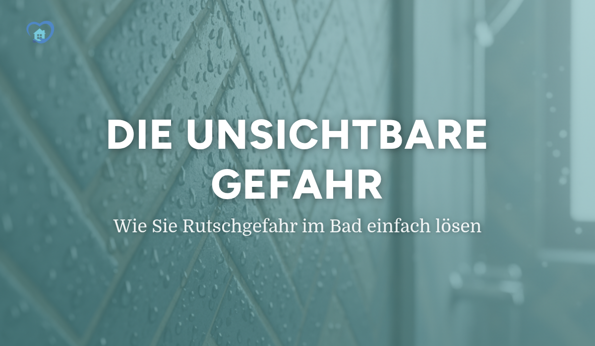

|
|

|
|

|
Die unsichtbare Gefahr
Hallo [Vorname],
ein kurzer Moment der Unachtsamkeit auf nassen Fliesen – und schon ist es passiert. Die größte Gefahr im Bad ist oft unsichtbar und leise, aber ihre Folgen können gravierend sein.
Doch was, wenn Sicherheit ebenfalls unsichtbar sein könnte?
Weg mit der Badematte!
In unserem brandneuen Ratgeber-Artikel zeigen wir Ihnen, warum unhygienische Badematten ausgedient haben und wie moderne Technologie Ihr Bad dauerhaft sicher macht, ohne die Optik zu beeinträchtigen. Entdecken Sie:
| 💧 |
Die wahre Gefahr: Warum glatte Fliesen so tückisch sind. |
|
| 👁 |
Unsichtbare Lösungen: Wie wir Fliesen und Wannen rutschfest machen, ohne dass man es sieht. |
|
| ✅ |
Interaktiver Sicherheits-Check: Testen Sie online, wie hoch das Risiko in Ihrem Bad ist. |
Klicken Sie sich jetzt rein und erfahren Sie, wie Sie Ihr Bad in eine echte Wohlfühl-Oase ohne Kompromisse verwandeln.
Wir wünschen Ihnen allzeit sicheren Stand.
Herzliche Grüße,
Ihr Team von Back in the Building
P.S. Sie möchten nicht lesen, sondern direkt handeln? Vereinbaren Sie hier Ihre kostenlose & unverbindliche Sicherheits-Beratung.
|
|
|
Back in the building GmbH | Emil Figge Straße 91, 44227 Dortmund
Newsletter abbestellen
|